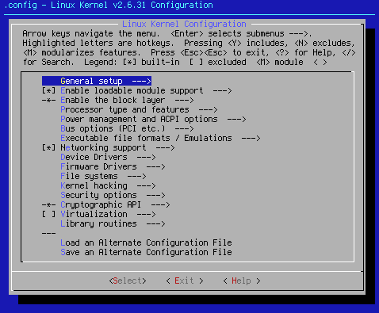
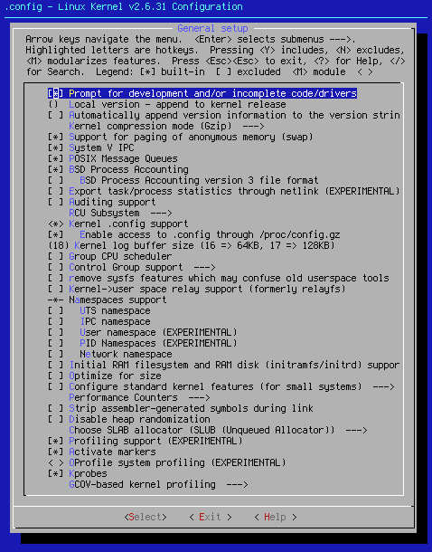

The following pages will use a stylized form of make menuconfig as the configuration program. This is because the standard Gentoo install comes as a CLI system only, and you will see the make menuconfig screen before any other kernel configuration screen (make xconfig, etc.). The stylization helps clarity when explaining the kernel configuration process in the colored text that makes up the rest of the pages.
Upon starting make menuconfig, you will see the following:

Since there isn't a lot to configure on the initial page, hit <Select>, and move on to what I refer to as page 1.

 [*] Prompt for development and/or incomplete code/drivers
[*] Prompt for development and/or incomplete code/drivers
If you desire to use any experimental and new code, this is a must have setting. Turning this setting on will allow you to use any and all experimental code. That includes both drivers and functional kernel code. This setting is turned on by default. It is wise to keep it that way.
() Local version - append to kernel release
[ ] Automatically append version information to the version string
Use these setting if you want to give your kernel a unique name. This is best used to keep track of your kernels if you use different kernel settings for different operational parameters. If you need this kind of support, turn this setting on and then add the string you wish to use in the code box that opens up. These settings are turned off by default.
Kernel compression mode (Gzip) --->
Available options: Gzip, Bzip, and Lzma.
If you wish to change the compression algorithm that compresses the kernel into its final form. The default compression mode is Gzip.
[*]Support for paging of anonymous memory (swap)
This setting allows for the use of swap. The use of swap is recommended. This setting is turned on by default.
[*] System V IPC
This setting allows for the System V interprocess communication. This is a very important setting, and is turned on. As such, this setting will most likely never be changed.
[*] POSIX Message Queues
Another message queueing system. It is turned on for those that require this support.
[*] BSD Process Accounting.
This setting allows for admins to find out who is doing what on their systems. Experimentation with this setting has shown that it can be turned off without issue. As a matter of fact, turning this setting off is helpful for those using the BFS in Zen kernels. This setting is turned on by default, but will most likely be turned off in future seed iterations.
RCU subsystem--->
This setting allows lock-free read-only access to data structures that are concurrently modified on SMP systems. It is turned on because it allows for better throughput. The default setting is for a fully preemptable RCU. Since it is only geared towards SMP systems, technically, monoprocessor systems can get away without it. The list of available RCU options is dictated on whether or not you've chosen to use kernel preemption. If not, the list is small. If kernel preemption is on, it is recommended you use the
(*) Preemptible RCU setting.
<*> Kernel .config support.
This setting copies the .config which made the kernel in question into the kernel itself. If you accidentally delete your .config file, as long as you can get the kernel to boot, you will be able to resurrect your .config settings. This setting is set to on by default. Turn this setting off if you can assure yourself that you will never accidentally destroy or delete your kernel .config. file. It's on because even I've lost a .config.
[*] Enable access to .config through /proc/config.gz
This setting is an adjunct to the setting above. If using the above setting, this setting should also be used. It defaults to on.
(18)Kernel log buffer size
This setting sets the size of the kernel log buffer. The integer 18 sets the size of this buffer to 256k, which should be good for most users. This setting is set as shown, and can be adjusted to fit your circumstances. In most cases, that won't be necessary.
[ ] Group CPU scheduler
[ ] Control Group support --->
 Consider both of these settings as poison to your computer. While the idea has merit, at the time of this writing, there remain no userspace programs to interface with the setup. As such, these settings and their analogues tend to slow systems down. For this reason, these settings are turned off by default, and their use is highly discouraged. Kernel seeds are about speed and efficiency, and the above settings are neither fast or efficient.
Consider both of these settings as poison to your computer. While the idea has merit, at the time of this writing, there remain no userspace programs to interface with the setup. As such, these settings and their analogues tend to slow systems down. For this reason, these settings are turned off by default, and their use is highly discouraged. Kernel seeds are about speed and efficiency, and the above settings are neither fast or efficient.
[ ] remove sysfs features which may confuse older userspace tools
This setting has an analogue in older kernel versions:
[ ] Create deprecated sysfs layout for older userspace tools
 No matter what the name, if you are using udev, this setting must be turned off. Turning this setting on will break udev, or at least slow it down to a crawl. Either result is not desired. This setting is off by default, and shall remain so as long as udev is a part of Linux.
No matter what the name, if you are using udev, this setting must be turned off. Turning this setting on will break udev, or at least slow it down to a crawl. Either result is not desired. This setting is off by default, and shall remain so as long as udev is a part of Linux.
Kernel->user space relay support (formerly relayfs)
This setting is a vestige from older times. It is not required for a modern system, and as such, it is turned off by default. Its use is not recommended.
Namespaces support
[ ] UTS namespace
[ ] IPC namespace
[ ] User namespace
[ ] PID namespace
[ ] Network namespace.
These settings have pretty much the same effect as the Group CPU scheduler, and as such, affect the speed of the kernel. These settings are turned off by default.
[ ] Initial RAM filesystem and RAM disk (initramfs/initrd) support
Since the use of initrd/intramfs in Gentoo is for either the boot splash screen, or for those using RAID drivers as modules, I do not support it. Configured properly, a kernel doesn't require initrd/initramfs. Those who use the bootsplash screen or RAID drivers as modules should turn this setting on. I do not support initrd/initramfs.
[ ] Optimize for size.
 Since the average size of the finished kernel image is in the range of two to three megabytes, and current hard drives are rated in terabytes, and optimizing for size doesn't shave that much off the final size of the finished image, and because at one time this setting was followed by a warning about broken compilers in the "olden" days (about .25), and because this setting has also been noted for introducing instability into the kernel, this setting defaults to off, and shall remain that way.
Since the average size of the finished kernel image is in the range of two to three megabytes, and current hard drives are rated in terabytes, and optimizing for size doesn't shave that much off the final size of the finished image, and because at one time this setting was followed by a warning about broken compilers in the "olden" days (about .25), and because this setting has also been noted for introducing instability into the kernel, this setting defaults to off, and shall remain that way.
[ ] Configure standard kernel features (for small systems) --->
When expanded, you get the following settings:
[*] Enable 16-bit UID system calls
[*] Sysctl syscall support
These settings don't need to be changed. They are kernel defautls, and even come with a warning. While there are special cases when these settings might be useful, they are special cases, and well out of the realm of the generic nature of the basic kernel seed.
You will also find the following under
[ ] Configure standard kernel features (for small systems) --->
Load all symbols for debugging/ksymoops
[*] Include all symbols in kallsyms
[ ] Do an extra kallsyms pass
 These settings provide user readable messages during kernel oopses or kernel panics. As such, it is highly recommended to at least turn on [*] Include all symbols in kallsyms. If you find your kallysyms aren't working properly, then you can also turn on [ ] Do an extra kallsyms pass. Since this is an unusual case, this setting is turned off. If you are having serious kernel issues and panics, turn this on to insure your ability to troubleshoot.
These settings provide user readable messages during kernel oopses or kernel panics. As such, it is highly recommended to at least turn on [*] Include all symbols in kallsyms. If you find your kallysyms aren't working properly, then you can also turn on [ ] Do an extra kallsyms pass. Since this is an unusual case, this setting is turned off. If you are having serious kernel issues and panics, turn this on to insure your ability to troubleshoot.
Performance counters --->
Since this is new code as of .31, I have not experimented with these settings. It has been written that using them interferes with the operation of the BFS (Brain Fuck Scheduler) in Zen kernels. Since I don't want anything messing with BFS, I keep these settings turned off. Anyone wishing to try them out and report their findings is welcome to do so. They appear benign.
[ ] Strip assembler-generated symbols during link
This code is also new as of the .31 kernel source. I have not experimented with it. Anyone wishing to do so, please report your findings, especially if it leads to a speed increase.
[ ] Disable heap randomization
This setting is counter-intuitive. If you want heap randomization to be activated, you keep the setting turned off. If you want to turn off heap randomization, turn the setting on. Confused yet? So was I. That's why the original information here was incorrect. This setting was introduced due to a root exploit that is fixed by heap randomization. The default for this setting is off, which enables heap randomization. It is best to leave this setting as is.
Choose SLAB allocator --->
This option allows you to select a slab allocator. When opened, you have the following options:
( )SLAB
(*)SLUB
For most people, (*)SLUB works the fastest. Therefore, (*)SLUB is the seed default.
[*] Profiling support (EXPERIMENTAL)
[*] Activate markers
< > Oprofile system profiling (EXPERIMENTAL)
[*] Kprobes
These settings were adapted from the original make defconfig, Apparently, they are used for troubleshooting. I am currently experimenting with the settings to see what happens when they are turned off. For now, they default to on.
GCOV-based kernel profiling --->
These settings are also part of new code introduced in the .31 kernel series. I have not experimented with them.

Cheers,
Pappy